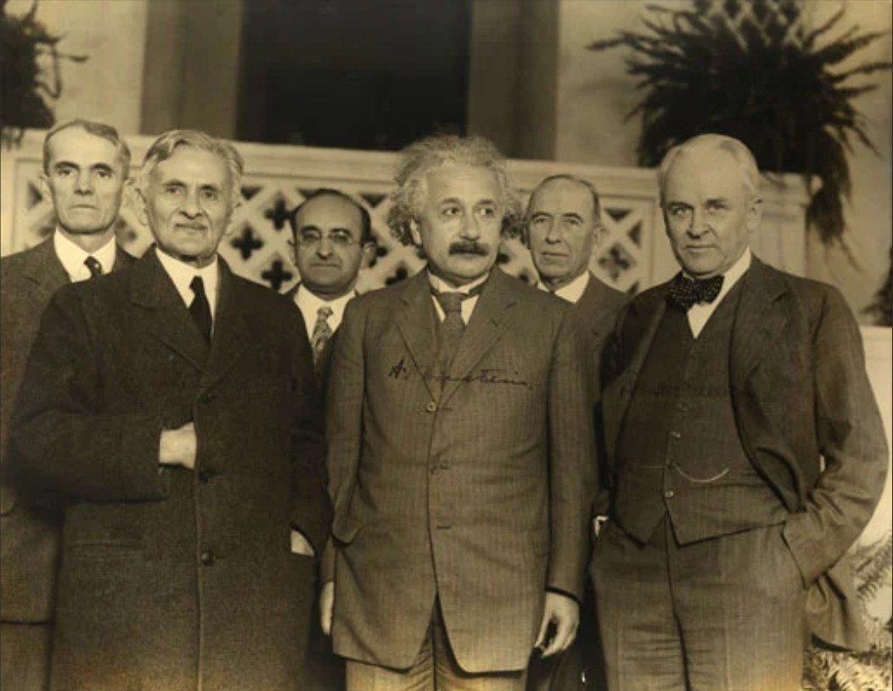

Biography
Albert Einstein was a German mathematician and physicist who developed the special and general theories of relativity. In 1921, he won the Nobel Prize in Physics for his explanation of the photoelectric effect. In the following decade, he immigrated to the United States after being targeted by the German Nazi Party. His work also had a major impact on the development of atomic energy. In his later years, Einstein focused on unified field theory. He died in April 1955 at age 76. With his passion for inquiry, Einstein is generally considered the most influential physicist of the 20th century.
Achievements
- Theory of Relativity
- Photoelectric Effect
- Nobel Prize in Physics (1921)
- Mass-Energy Equivalence Formula: E=mc²
- Contributions to Quantum Theory
Inspirational Quotes
"Life is like riding a bicycle. To keep your balance you must keep moving."
"I have no special talent. I am only passionately curious."
"The world is a dangerous place to live; not because of the people who are evil, but because of the people who don’t do anything about i."
Gallery
